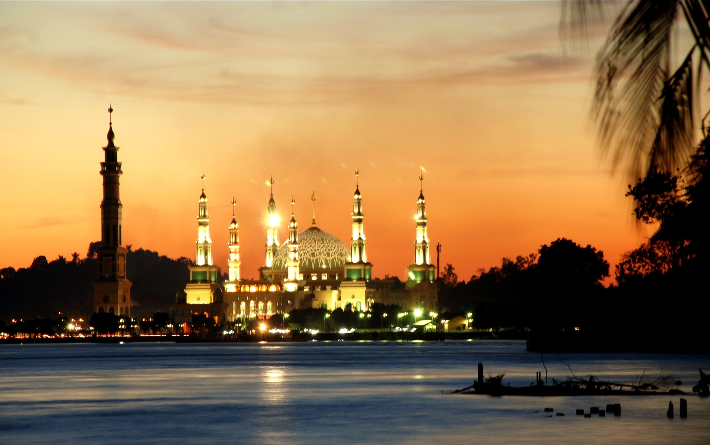

Profil Daerah
Kalimantan Timur (Kaltim) adalah sebuah provinsi di Indonesia yang terletak di sisi timur Pulau Kalimantan. Kalimantan Timur merupakan salah satu provinsi terluas yang kaya akan potensi sumber daya alam. Sumber daya alam dan hasil buminya sebagian besar diekspor ke luar negeri, menjadikan provinsi ini sebagai salah satu penghasil devisa utama bagi Indonesia, khususnya dari sektor migas, pertambangan, dan kehutanan. Wilayah Kalimantan Timur yang terdiri dari luas daratan 127.346,92 km² dan luas pengelolaan laut 25.656 km², terletak antara 113°44' dan 119°00' Bujur Timur, dan antara 2°33' Lintang Utara dan 2°25' Lintang Selatan.... Kalimantan Timur yang merupakan provinsi terluas ketiga setelah Papua dan Kalimantan Tengah, dibagi menjadi 7 kabupaten dan 3 kota. Tujuh kabupaten tersebut adalah Paser dengan ibu kota Tanah Grogot, dan Kutai Barat dengan ibu kota Sendawar, Kutai Kartanegara dengan ibu kota Tenggarong, Kutai Timur dengan ibu kota Sangatta, Berau dengan ibu kota Tanjung Redeb, Penajam Paser Utara dengan ibu kota Penajam, dan Mahakam Ulu dengan ibu kota Long Bagun. Sedangkan tiga kota adalah Kota Samarinda, Kota Balikpapan, dan Kota Bontang. Etnis paling dominan tahun 2010 di Kalimantan Timur (termasuk Kalimantan Utara) yaitu etnis Jawa (30,24%) yang menyebar di hampir seluruh wilayah terutama daerah transmigrasi hingga daerah perkotaan. Etnis terbesar kedua yaitu Bugis (20,81%) yang banyak menempati kawasan pesisir dan perkotaan. Etnis terbesar ketiga adalah Banjar (12,45%) yang cukup dominan di Kota Samarinda dan Balikpapan. Hal ini karena Kalimantan Timur merupakan tujuan utama migran asal Pulau Jawa, Sulawesi dan Kalimantan Selatan. Di urutan keempat yaitu Etnis Dayak (9,94%) yang menempati daerah pedalaman. Etnis Kutai (7,80%) yang mendiami Kutai Kartanegara, Kutai Timur dan Kutai Barat berada di urutan kelima. Kemudian suku-suku lainnya dari berbagai daerah di Indonesia sejumlah 18.75%. Hasil utama provinsi ini adalah hasil tambang seperti minyak, gas alam dan batu bara. Sektor lain yang kini sedang berkembang adalah agrikultur, pariwisata dan industri pengolahan. Beberapa daerah seperti Balikpapan dan Bontang mulai mengembangkan kawasan industri berbagai bidang demi mempercepat pertumbuhan perekonomian. Sementara kabupaten-kabupaten di Kaltim kini mulai membuka wilayahnya untuk dibuat perkebunan seperti kelapa sawit dan lain-lain.